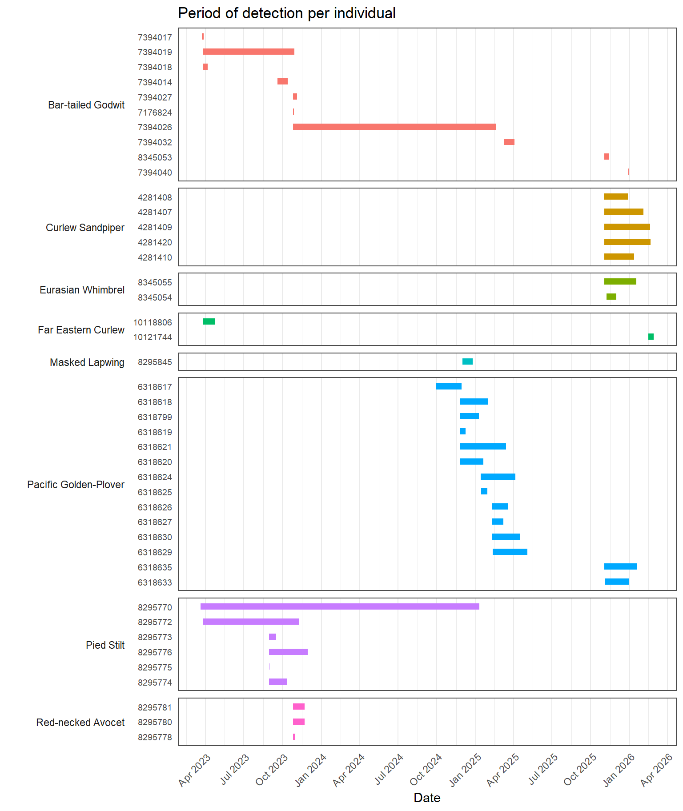
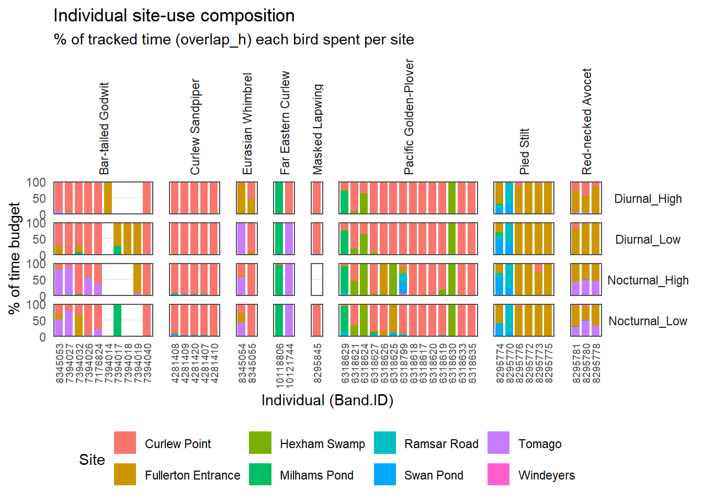
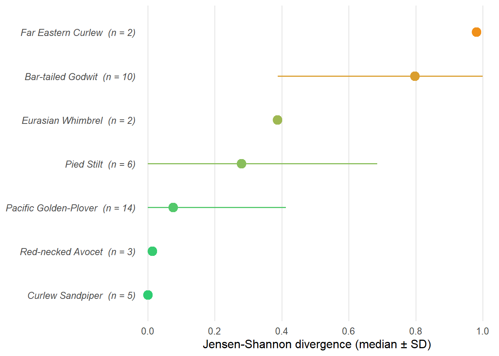
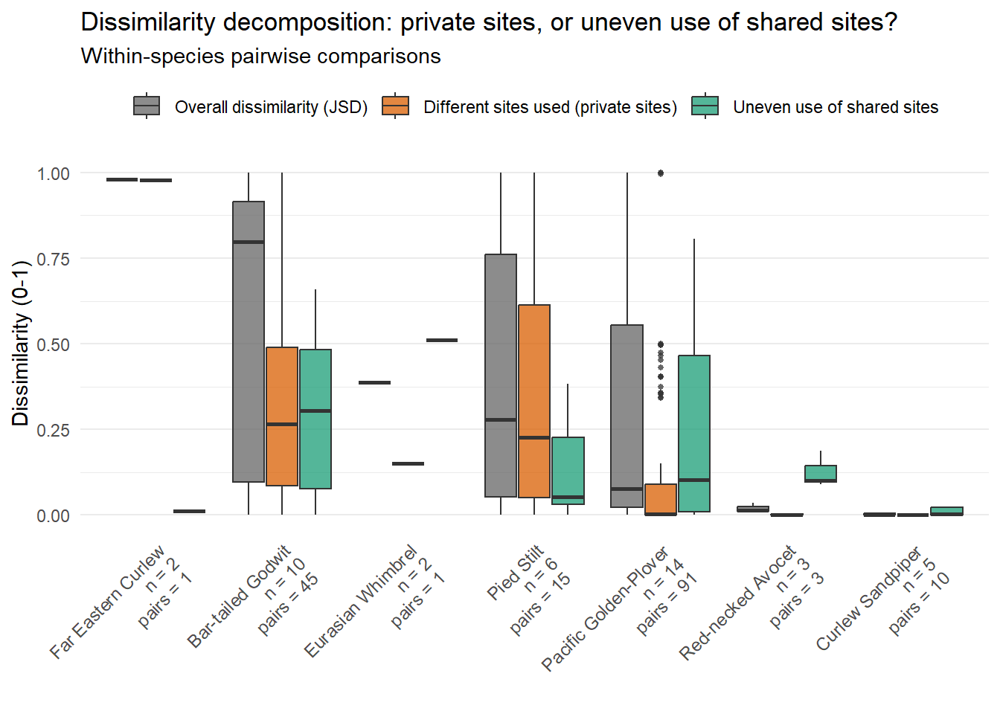
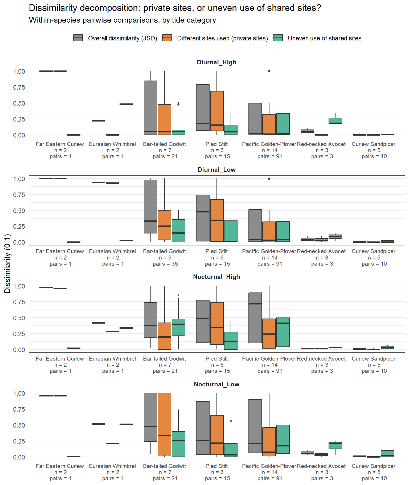
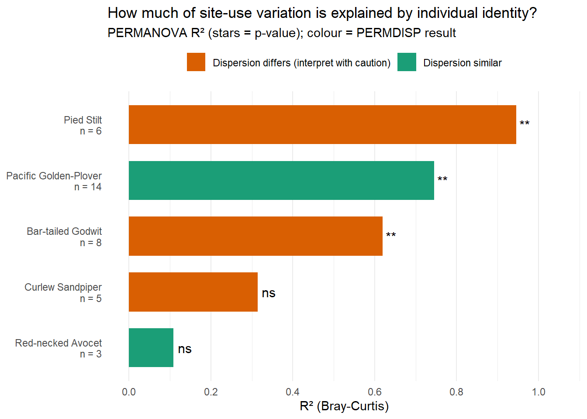
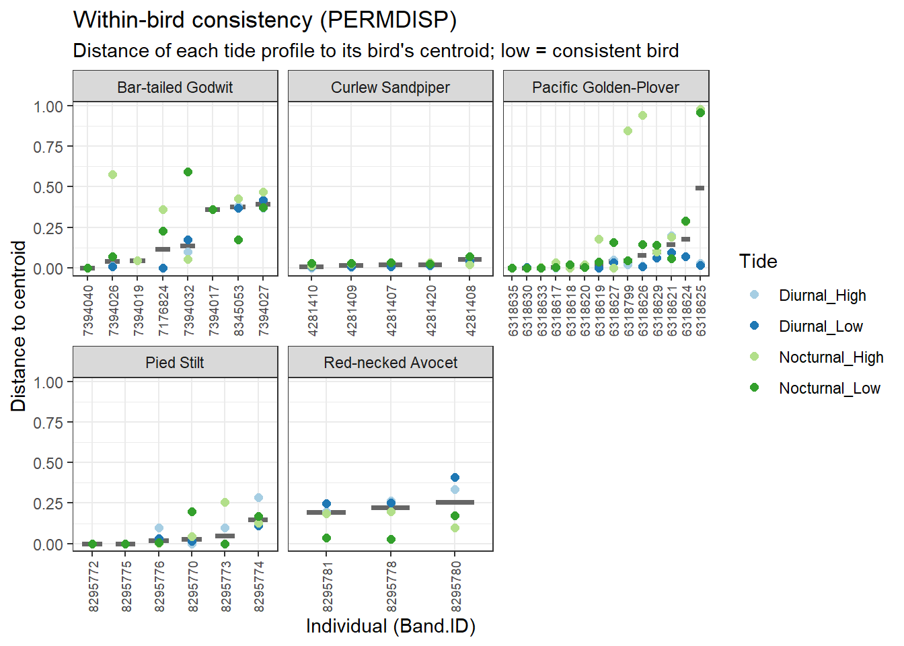
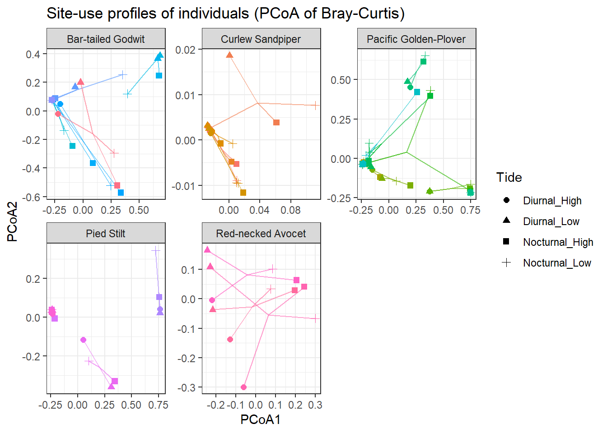

library(dplyr)
library(tidyr)
library(ggplot2)
library(gt)
library(vegan) # PERMANOVA (adonis2) + betadisper
library(betapart) # Jaccard turnover/nestedness & Bray-Curtis bal/gra decomposition
library(tibble)
library(purrr)
library(forcats)
library(scales)
library(patchwork)
library(forcats)Entropy, Eveness & Composition

As we will be re-using some of the data already loaded from previous workflow (see Station usage - hours (OBP method)), we will fetch here some of the objects we will re-use including: visit_duration, visit_hours_tide, tide_data, and *data_all**.
visit_hours_tide is then used onward so, the same rule applies in the data-set: < 1 hour gap between two runs are considered as a unique use of the area covered by a Motus station - the bird remained in the area within this hour gap.
Setup data
# Ensure correct format for analysis
visit_hours_tide <- visit_hours_tide %>%
mutate(Band.ID = as.character(Band.ID),
tideCategory = factor(tideCategory,
levels = c("Diurnal_High", "Diurnal_Low",
"Nocturnal_High", "Nocturnal_Low")))%>%
filter(!is.na(Band.ID), !is.na(recvDeployName))
# Carry sample size
n_tags_species <- visit_hours_tide %>%
filter(!is.na(Band.ID)) %>%
distinct(speciesEN, Band.ID) %>%
count(speciesEN, name = "n_indiv")
n_tags_species %>%
DT::datatable()Before going further, simply checking a bit more clearly the period every bird have been monitored.

Time budget per site
We use overlap_h: the duration (hours) each bird was confirmed present at each site in each hourly tide-bin. Summing overlap_h per bird x site gives a duration-based “time budget” to assess the question “how much does this bird rely on this site”.
# Time budget (%) all
site_use_ind <- visit_hours_tide %>%
group_by(speciesEN, Band.ID, recvDeployName) %>%
summarise(effort_h = sum(overlap_h, na.rm = TRUE), .groups = "drop") %>%
group_by(speciesEN, Band.ID) %>%
mutate(p = 100 * effort_h / sum(effort_h)) %>% # p = %
ungroup()
# Time budget (%) tideCategory
site_use_ind_tide <- visit_hours_tide %>%
group_by(speciesEN, Band.ID, tideCategory, recvDeployName) %>%
summarise(effort_h = sum(overlap_h, na.rm = TRUE), .groups = "drop") %>%
group_by(speciesEN, Band.ID, tideCategory) %>%
mutate(p = 100 * effort_h / sum(effort_h)) %>% # p = %
ungroup()
# Plot
ggplot(site_use_ind_tide,
aes(x = fct_reorder(Band.ID, p, .fun = max), y = p, fill = recvDeployName)) +
geom_col(width = 0.8) +
facet_grid(tideCategory ~ speciesEN, scales = "free_x", space = "free_x") +
scale_y_continuous(breaks = c(0, 50, 100), expand = c(0, 0)) +
labs(
title = "Individual site-use composition",
subtitle = "% of tracked time (overlap_h) each bird spent per site",
x = "Individual (Band.ID)", y = "% of time budget", fill = "Site") +
theme_minimal() +
theme(
axis.text.x = element_text(angle = 90, hjust = 1, vjust = 0.5, size = 7),
legend.position = "bottom",
panel.grid.major.x = element_blank(),
panel.grid.minor = element_blank(),
strip.text.x = element_text(angle = 90, hjust = 0, vjust = 0.5),
strip.text.y = element_text(angle = 0),
panel.border = element_rect(colour = "grey30", fill = NA, linewidth = 0.7),
panel.spacing.x = unit(0.8, "lines"),
panel.spacing.y = unit(0.4, "lines"))

Here, we can already see that for some species, most of individuals use sites in a different manner within the estuary, and for other species, most individuals use site in a similar manner.
However, we need to build some metrics capable to inform the degree of this dissimilarity (or similarity) within site use between individuals of a same species.
And going deeper, we ask whether birds (1) use their sites differently, and if they do (2) whether they use different sites, or the same sites but dis similarly.
Metrics
Definition
We need to first manually build function to compute Jensen-Shannon Divergence metric (JSD), and store results in a matrix. Then we can use betapart package (Baselga et Orme - 2012) to extract Jaccard and Bray-Curtis metrics.

# Jensen-Shannon Divergence (JSD) function definition
calculate_jsd <- function(p, q) {
eps <- 1e-10
p <- (p + eps) / sum(p + eps)
q <- (q + eps) / sum(q + eps)
m <- (p + q) / 2
0.5 * sum(p * log2(p / m)) + 0.5 * sum(q * log2(q / m))
}
# Drop sites below min_pct of a bird's time, then rescale rows to 100
clean_prop <- function(m, min_pct = 0) { # HERE I DECIDE TO NOT CLEAN (0%)
m2 <- m
m2[m2 < min_pct] <- 0
empty <- rowSums(m2) == 0 # bird with no site above threshold: keep original
m2[empty, ] <- m[empty, ]
m2 / rowSums(m2) * 100
}
# Bray-Curtis split into "private sites" and "uneven use of shared sites"
bray_split <- function(p, q) { # p, q = % time per site, each sums to 100
shared <- p > 0 & q > 0
private <- sum(p[!shared], q[!shared]) / 200
uneven <- sum(abs(p[shared] - q[shared])) / 200
c(bray_total = private + uneven, bray_private = private, bray_uneven = uneven)
}
compute_divergence <- function(prop_mat, min_pct = 0) {
if (nrow(prop_mat) < 2) return(NULL)
m <- clean_prop(prop_mat, min_pct)
pa <- as.data.frame((m > 0) * 1)
jac <- betapart::beta.pair(pa, index.family = "jaccard")
ids <- rownames(m)
pr <- combn(nrow(m), 2) # same pair order as a `dist` object
bray <- t(apply(pr, 2, function(ix) bray_split(m[ix[1], ], m[ix[2], ])))
jsd <- apply(pr, 2, function(ix) calculate_jsd(m[ix[1], ], m[ix[2], ]))
# sanity check (optional): bray_total should equal vegan's Bray-Curtis
# all.equal(unname(bray[, "bray_total"]), as.numeric(vegan::vegdist(m, "bray")))
tibble(
Band.ID_1 = ids[pr[1, ]],
Band.ID_2 = ids[pr[2, ]],
JSD = round(jsd, 3),
bray_total = round(bray[, "bray_total"], 3),
bray_private = round(bray[, "bray_private"], 3), # different sites used
bray_uneven = round(bray[, "bray_uneven"], 3), # same sites, unequal time
jac_total = round(as.numeric(jac$beta.jac), 3),
jac_turnover = round(as.numeric(jac$beta.jtu), 3),
jac_nested = round(as.numeric(jac$beta.jne), 3))
}
# Helper: long-format individual x site proportion matrix -> wide matrix
to_prop_matrix <- function(df) {
wide <- df %>%
select(Band.ID, recvDeployName, p) %>%
pivot_wider(names_from = recvDeployName, values_from = p, values_fill = 0)
m <- as.matrix(wide[, -1])
rownames(m) <- wide$Band.ID
m
}
# Results
divergence_global <- site_use_ind %>%
group_split(speciesEN) %>%
map(function(df) {
res <- compute_divergence(to_prop_matrix(df), min_pct = 0)
if (!is.null(res)) res$speciesEN <- df$speciesEN[1]
res
}) %>% compact() %>% bind_rows()Jensen Shannon Divergence: overall dissimilarity
jsd_sum <- divergence_global %>%
group_by(speciesEN) %>%
summarise(med = median(JSD),
sd = sd(JSD),
.groups = "drop") %>%
left_join(n_tags_species, by = "speciesEN") %>%
mutate(lo = pmax(med - sd, 0), # keep bars inside 0-1
hi = pmin(med + sd, 1),
label = fct_reorder(paste0(speciesEN, " (n = ", n_indiv, ")"), med))
ggplot(jsd_sum, aes(y = label)) +
geom_linerange(aes(xmin = lo, xmax = hi, colour = med),
orientation = "y", linewidth = 0.7) +
geom_point(aes(x = med, colour = med), size = 4) +
scale_colour_gradient(low = "#2ECC71", high = "#F28E16",
limits = c(0, 1), guide = "none") +
scale_x_continuous(limits = c(0, 1), breaks = seq(0, 1, 0.2),
expand = expansion(mult = c(0.02, 0.03))) +
labs(x = "Jensen-Shannon divergence (median ± SD)", y = NULL) +
theme_minimal(base_size = 12) +
theme(panel.grid.major.y = element_blank(),
panel.grid.minor = element_blank(),
axis.text.y = element_text(face = "italic"))
Jaccard & Bray-Curtis: dissimilarity decomposition
How much of the difference between two birds comes from using different sites (private sites) versus using the same sites but spending different amounts of time at them (uneven use of shared sites)?
A simple example:
Bird A: 80% Site 1, 20% Site 2
Bird B: 50% Site 1, 50% Site 3
Site 1 is shared (80 vs 50, a 30-point gap), so that’s uneven. Sites 2 and 3 each belong to only one bird (20 and 50 points), so that’s private. Total difference = (30 + 20 + 50) / 200 = 0.5. Of that, 0.35 is private and 0.15 is uneven.
So the values of the pairwise tests are:
Private: [0-1] with 0 when birds share all sites and 1 when only one of the two birds goes to one site.
Uneven: [0-1] with 0 when birds use the same site in the exact same proportion of time, and 1 both birds go to this site, but one spends more time there than the other.
Both values run from 0 to 1, and together they add up to the total Bray-Curtis for one pair of birds.
species_lab <- divergence_global %>%
group_by(speciesEN) %>%
summarise(med_jsd = median(JSD),
n_pairs = n(),
n_indiv = n_distinct(c(Band.ID_1, Band.ID_2)),
.groups = "drop") %>%
mutate(label = fct_reorder(
paste0(speciesEN, "\n n = ", n_indiv, "\n pairs = ", n_pairs),
med_jsd, .desc = TRUE)) %>%
select(speciesEN, label)
decomp_long <- divergence_global %>%
select(speciesEN, JSD, bray_private, bray_uneven) %>%
pivot_longer(cols = c(JSD, bray_private, bray_uneven),
names_to = "metric", values_to = "value") %>%
left_join(species_lab, by = "speciesEN") %>%
mutate(metric = dplyr::recode(metric,
JSD = "Overall dissimilarity (JSD)",
bray_private = "Different sites used (private sites)",
bray_uneven = "Uneven use of shared sites"),
metric = factor(metric, levels = c(
"Overall dissimilarity (JSD)",
"Different sites used (private sites)",
"Uneven use of shared sites")))
plot_decomposition <- decomp_long %>%
ggplot(aes(x = label, y = value, fill = metric)) +
geom_boxplot(alpha = 0.75, outlier.shape = 16, outlier.size = 1,
position = position_dodge(width = 0.8)) +
scale_fill_manual(values = c(
"Overall dissimilarity (JSD)" = "grey40",
"Different sites used (private sites)" = "#D95F02",
"Uneven use of shared sites" = "#1B9E77")) +
labs(
title = "Dissimilarity decomposition: private sites, or uneven use of shared sites?",
subtitle = "Within-species pairwise comparisons",
x = NULL, y = "Dissimilarity (0-1)", fill = NULL) +
theme_minimal() +
theme(
axis.text.x = element_text(angle = 45, hjust = 1, size = 9),
legend.position = "top",
panel.grid.major.x = element_blank())
plot_decomposition
A species where Jaccar turnover value (orange box) sits above the Bray-Curtis balanced variation (green box) highlights that individuals are mostly diverging in site use because they use different (private) sites. Inversely, individuals use same (shared/common) sites, but use them unevenly (unequal use).
Tide and diel periods
We are now interested about the same question but depending the tide and diel. divergence_tide is the tide-specific version of divergence_global implementing the same pairwise metrics, but computed separately inside each tide category.
Birds are only compared if they were detected in the same tide category. A bird with no data in Nocturnal_Low is not in that tide’s pairs. Groups with fewer than 2 birds are skipped.
divergence_tide <- site_use_ind_tide %>%
group_by(speciesEN, tideCategory) %>%
group_split() %>%
map(function(df) {
mat <- to_prop_matrix(df)
res <- compute_divergence(mat)
if (!is.null(res)) {
res$speciesEN <- df$speciesEN[1]
res$tideCategory <- df$tideCategory[1]
}
res
}) %>%
compact() %>%
bind_rows()# species order: by overall median JSD (same order in every tide panel)
species_order <- divergence_tide %>%
group_by(speciesEN) %>%
summarise(med_jsd = median(JSD), .groups = "drop") %>%
arrange(desc(med_jsd)) %>%
pull(speciesEN)
# labels with n and pairs, computed per species x tide
species_lab_tide <- divergence_tide %>%
group_by(speciesEN, tideCategory) %>%
summarise(n_pairs = n(),
n_indiv = n_distinct(c(Band.ID_1, Band.ID_2)),
.groups = "drop") %>%
mutate(label_chr = paste0(speciesEN, "\n n = ", n_indiv, "\n pairs = ", n_pairs),
sp_order = match(speciesEN, species_order)) %>%
arrange(sp_order, tideCategory) %>%
mutate(label = factor(label_chr, levels = unique(label_chr))) %>%
select(speciesEN, tideCategory, label)
decomp_long_tide <- divergence_tide %>%
select(speciesEN, tideCategory, JSD, bray_private, bray_uneven) %>%
pivot_longer(cols = c(JSD, bray_private, bray_uneven),
names_to = "metric", values_to = "value") %>%
left_join(species_lab_tide, by = c("speciesEN", "tideCategory")) %>%
mutate(metric = dplyr::recode(metric,
JSD = "Overall dissimilarity (JSD)",
bray_private = "Different sites used (private sites)",
bray_uneven = "Uneven use of shared sites"),
metric = factor(metric, levels = c(
"Overall dissimilarity (JSD)",
"Different sites used (private sites)",
"Uneven use of shared sites")))
plot_decomposition_tide <- decomp_long_tide %>%
ggplot(aes(x = label, y = value, fill = metric)) +
geom_boxplot(alpha = 0.75, outlier.shape = 16, outlier.size = 1,
position = position_dodge(width = 0.8)) +
facet_wrap(~ tideCategory, ncol = 1, scales = "free_x") +
scale_fill_manual(values = c(
"Overall dissimilarity (JSD)" = "grey40",
"Different sites used (private sites)" = "#D95F02",
"Uneven use of shared sites" = "#1B9E77")) +
labs(
title = "Dissimilarity decomposition: private sites, or uneven use of shared sites?",
subtitle = "Within-species pairwise comparisons, by tide category",
x = NULL, y = "Dissimilarity (0-1)", fill = NULL) +
theme_minimal() +
theme(
axis.text.x = element_text(size = 8),
legend.position = "top",
panel.grid.major.x = element_blank(),
panel.border = element_rect(colour = "grey30", fill = NA, linewidth = 0.6),
strip.text = element_text(face = "bold"))
plot_decomposition_tide
Statistical individual differences
Definition
PERMANOVA (vegan::adonis2, Anderson 2001) tests whether groups (here: individual birds) differ in the location (centroid) of their site-use composition, using a permutation test on the distance matrix itself rather than treating pairwise distances as independent samples (as would do Kruskal or ANOVA). Permutation test is distribution-free, robust to non-normal/compositional data, and is standard in ecology for kind of question.
For each species we use the four tideCategory per bird as replicate observations and test Bray-Curtis distance ~ Band.ID.
We pair this with PERMDISP (vegan::betadisper + permutest, Anderson 2006; Anderson & Walsh 2013) which tests whether individuals differ in dispersion (within-bird consistency) rather than in mean composition. This matters because PERMANOVA can be significant either because individuals truly use different site compositions, or because some individuals are simply more variable than others, and PERMDISP tells which one.

# Turn the table (one row = bird x tide x site) for ONE species into a matrix where each row is a "site-use profile" one bird in one tide category) and each column is a site.
# sp_df = data frame of one species
# min_prof = minimum number of profiles (tide categories) a bird must have to be kept (need replicates within a bird)
build_profiles <- function(sp_df, min_prof = 2) {
wide <- sp_df %>%
# unique ID for each profile
mutate(row_id = paste(Band.ID, tideCategory, sep = "__")) %>%
select(row_id, Band.ID, tideCategory, recvDeployName, p) %>%
# one column per site (recvDeployName); cell = proportion of use (p)
# sites never used by that bird/tide get 0 instead of NA
pivot_wider(names_from = recvDeployName, values_from = p, values_fill = 0)
meta <- wide %>% select(row_id, Band.ID, tideCategory)
# mat = only the site columns, as a numeric matrix (needed by vegdist)
mat <- as.matrix(wide %>% select(-row_id, -Band.ID, -tideCategory))
# name the rows
rownames(mat) <- wide$row_id
# Remove empty profiles, a row summing to 0 has no detections; Bray-Curtis is undefined for it
ok <- rowSums(mat) > 0
mat <- mat[ok, , drop = FALSE]; meta <- meta[ok, ] # drop = FALSE keeps matrix shape
# Keep only birds with enough profiles
ok <- ave(seq_len(nrow(meta)), meta$Band.ID, FUN = length) >= min_prof # counts how many profiles each bird has
# return the filtered matrix and the matching metadata
list(mat = mat[ok, , drop = FALSE], meta = meta[ok, ])
}
# Stats
# sp_df = data frame of one species
# min_indiv = minimum number of birds needed to run the tests
# min_prof = minimum profiles per bird (passed to build_profiles)
# nperm = number of permutations for the p-values
fit_species <- function(sp_df, min_indiv = 3, min_prof = 2, nperm = 999) {
# build the profile matrix + metadata
pr <- build_profiles(sp_df, min_prof)
# number of distinct birds that survived the filtering
n_indiv <- n_distinct(pr$meta$Band.ID)
# Helper when not enough birds
if (n_indiv < min_indiv) {
return(list(summary = tibble(
n_indiv = n_indiv, n_obs = nrow(pr$meta),
F = NA_real_, R2 = NA_real_, p_permanova = NA_real_,
F_disp = NA_real_, p_dispersion = NA_real_,
# explanation
note = paste0("Skipped: ", n_indiv, " individuals with >= ", min_prof,
" tide profiles (need >= ", min_indiv, ")"))))
}
# Bray-Curtis dissimilarity between all pairs of profiles
# 0 = identical site use, 1 = no sites in common
d <- vegan::vegdist(pr$mat, method = "bray")
# PERMANOVA
# H0: all birds have the same mean (centroid) site-use composition
perm <- vegan::adonis2(d ~ Band.ID, data = pr$meta, permutations = nperm)
# PERMDISP
# betadisper: distance of each profile to its own bird's centroid
bd <- vegan::betadisper(d, pr$meta$Band.ID)
# permutest: H0 = all birds have the same within-bird variability
pd <- vegan::permutest(bd, permutations = nperm)
# outputs
list(
# one-row summary of the tests
summary = tibble(
n_indiv = n_indiv, n_obs = nrow(pr$meta),
F = perm$F[1], # PERMANOVA pseudo-F
R2 = perm$R2[1], # share of variation explained by bird identity
p_permanova = perm$`Pr(>F)`[1], # PERMANOVA p-value
F_disp = pd$tab$F[1], # PERMDISP F
p_dispersion = pd$tab$`Pr(>F)`[1],# PERMDISP p-value
note = ""),
# distance of each profile to its bird's centroid (for dispersion boxplots)
dist = tibble(Band.ID = pr$meta$Band.ID, tideCategory = pr$meta$tideCategory,
dist_centroid = bd$distances),
# coordinates on the first two PCoA axes (for the ordination plot)
scores = tibble(Band.ID = pr$meta$Band.ID, tideCategory = pr$meta$tideCategory,
PCoA1 = bd$vectors[, 1], PCoA2 = bd$vectors[, 2]))
}set.seed(1)
fits <- site_use_ind_tide %>%
group_split(speciesEN) %>%
set_names(map_chr(., ~ .x$speciesEN[1])) %>%
map(fit_species)
permanova_results <- map_dfr(fits, ~ .x$summary, .id = "speciesEN") %>%
mutate(
sig_permanova = case_when(
is.na(p_permanova) ~ "",
p_permanova < 0.001 ~ "***",
p_permanova < 0.01 ~ "**",
p_permanova < 0.05 ~ "*",
TRUE ~ "ns"),
interpretation = case_when(
is.na(p_permanova) ~ note,
p_permanova < 0.05 & (is.na(p_dispersion) | p_dispersion >= 0.05) ~
"Individuals differ significantly in mean site-use composition (robust)",
p_permanova < 0.05 & p_dispersion < 0.05 ~
"Significant, but dispersion also differs - interpret with caution (Anderson & Walsh 2013)",
p_permanova >= 0.05 & !is.na(p_dispersion) & p_dispersion < 0.05 ~
"No difference in mean site use, but birds differ in consistency across tides",
TRUE ~ "No evidence of individual-level difference in site use"))
disp_df <- map_dfr(fits, ~ .x$dist, .id = "speciesEN")
# PCoA
scores_df <- map_dfr(fits, ~ .x$scores, .id = "speciesEN") %>%
group_by(speciesEN, Band.ID) %>%
mutate(c1 = mean(PCoA1), c2 = mean(PCoA2)) %>%
ungroup()Results
So far we compared pairs of birds. Here we ask a broader question for each species: does each bird have its own “signature” way of using sites, or are all birds basically alike?
Each bird has up to four site-use profiles, one per tide category (Diurnal_High, Diurnal_Low, Nocturnal_High, Nocturnal_Low). Each profile is the share of time the bird spent at each site. We use two complementary tests.
PERMANOVA: does bird identity matter? It checks whether profiles from the same bird are more alike than profiles from different birds. The p-value comes from shuffling bird names 999 times and asking how often a random shuffle looks as “bird-specific” as the real data. The R² tells us how much: an R² of 0.7 means 70% of the differences in site use are explained by which bird it is, and the remaining 30% is the same bird behaving differently across tides.
PERMDISP: are some birds more variable than others? A significant PERMANOVA can also arise if some birds are simply more erratic than others. PERMDISP measures how far each profile sits from its bird’s own average profile, and tests whether birds differ in that spread.
Find below the results for our population of the PERMANOVA and PERMDISP tests.
| Table. PERMANOVA test of individual site-use divergence, per species | ||||||||||
|---|---|---|---|---|---|---|---|---|---|---|
| Species | N indiv. | N profiles | F | R² | p (PERMANOVA) | F (disp.) | p (PERMDISP) | note | Interpretation | |
| Bar-tailed Godwit | 8 | 28 | 4.65 | 0.62 | 0.001 | 2.72 | 0.043 | ** | Significant, but dispersion also differs - interpret with caution (Anderson & Walsh 2013) | |
| Pacific Golden-Plover | 14 | 56 | 9.46 | 0.75 | 0.001 | 1.67 | 0.099 | ** | Individuals differ significantly in mean site-use composition (robust) | |
| Pied Stilt | 6 | 24 | 63.03 | 0.95 | 0.001 | 3.35 | 0.029 | ** | Significant, but dispersion also differs - interpret with caution (Anderson & Walsh 2013) | |
| Curlew Sandpiper | 5 | 20 | 1.72 | 0.31 | 0.157 | 4.32 | 0.016 | ns | No difference in mean site use, but birds differ in consistency across tides | |
| Red-necked Avocet | 3 | 12 | 0.55 | 0.11 | 0.718 | 0.63 | 0.518 | ns | No evidence of individual-level difference in site use | |
| Eurasian Whimbrel | 2 | 8 | NA | NA | NA | NA | NA | Skipped: 2 individuals with >= 2 tide profiles (need >= 3) | Skipped: 2 individuals with >= 2 tide profiles (need >= 3) | |
| Far Eastern Curlew | 2 | 8 | NA | NA | NA | NA | NA | Skipped: 2 individuals with >= 2 tide profiles (need >= 3) | Skipped: 2 individuals with >= 2 tide profiles (need >= 3) | |
| Masked Lapwing | 1 | 3 | NA | NA | NA | NA | NA | Skipped: 1 individuals with >= 2 tide profiles (need >= 3) | Skipped: 1 individuals with >= 2 tide profiles (need >= 3) | |
PERMANOVA (vegan::adonis2, Bray-Curtis, 999 permutations) tests whether Band.ID explains site-use composition. PERMDISP (betadisper) tests whether individuals differ in within-bird consistency rather than in mean composition - a significant PERMANOVA alongside a significant PERMDISP should be interpreted cautiously (Anderson & Walsh 2013). |
||||||||||
Find below the results of PERMANOVA by individuals grouped by species. Therefore showing how much individual vary in site use.

Find below how much each bird is consistent in site use depending the tides.

Find below, grouped per species, how each birds (species color different shade) is using sites.

Keep in mind
- With only 2 to 4 profiles per bird, power is limited. Check the number of profiles (N profiles) in the table.
- Results describe time detected by the receivers, not true time spent at each site.